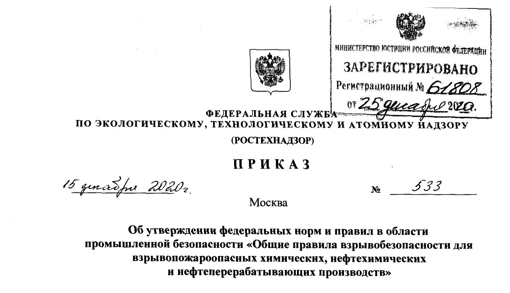
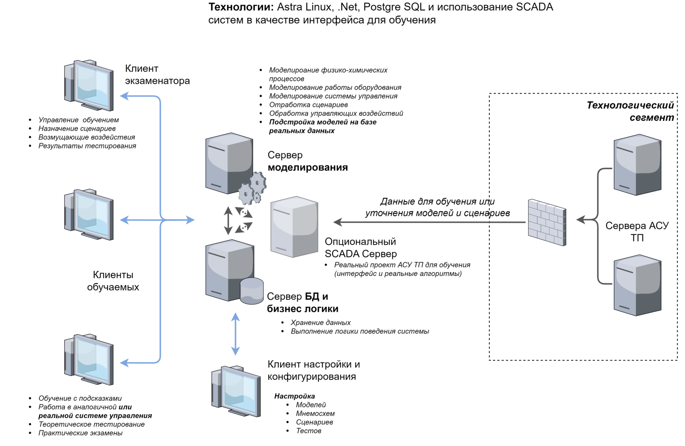

Сатурн Технолоджи
Тренажер оператора АСУ ТП
Ваши сотрудники готовы к любым ситуациям
Основные возможности тренажера
Моделирование
Имитация технологических процессов, работу АСУ ТП и СПАЗ, а также интерфейс АСУ ТП ( в случае наличия такой потребности)
Обучение
Проводить как самостоятельное обучение по заданным сценариям, так и обучение под руководством инструктора
Нештатные ситуации
Имитация неисправности оборудования, каналов управления и блоков АСУ ТП. Возможность задания ситуаций согласно ПЛАС.
Система обучения
Проводить плановые и внеплановые проверки знаний (отработку сценариев и прохождение тестов)
Навыки всегда актуальны
Восстанавливать навыки управления после длительного перерыва (отпуск, вахта, болезнь)
Минимизация рисков
Организовывать проверки режимов работы комплекса, без риска повреждения оборудования
Соответсвие приказу Ростехнадзора №533 от 15 декабря 2020 года
Согласно приказу Ростехнадзора на технологических объектах с блоками I и II категории взрывоопасности все сотрудники, непосредственно ведущие технологический процесс, должны проходить обучение на тренажерах, содержащих максимально приближенные к реальным динамические модели процессов.
Внедрение тренажерного комплекса позволит вашему предприятию соответствовать данным требованиям

Динамические модели процессов
- В составе тренажера используются динамические модели технологических процессов. Эти модели основаны на физико-химических моделях процессов происходящих в технологическом оборудовании.
- Базовые модели актуализируются на этапе проектирования, в соответствии с особенностями конкретного технологического объекта заказчика.
- Тонкая настройка моделей может производится путем автоматического сбора данных и подстройке параметров моделей на основе данных реальной АСУ ТП.
- Тренажер подготовит Ваш персонал к управлению технологическим комплексом в штатных и пусковых режимах работы, принятию необходимых мер при возникновении нештатных и аварийных ситуаций.
Интеграция с любой системой АСУ ТП
Тренажер может использоватсья в двух режимах:
в режиме интеграции с существующей АСУ ТП, когда она выступает в качестве интерфейса, а тренажер моделирует только работу оборудования.
в независимом режиме - когда тренажер также эмулирует и АСУ ТП, что особенно важно в случае когда невозможна полноценная работа с ушедшим с российского рынка вендором.
Импортозамещение
Тренажер полностью российская разработка, базирующиеся на компонентах и продуктах с открытым исходным кодом. Это позволяет ей быть устойчивой и независимой при любой ситуации на рынке.
Архитектура решения
Архитектура решения постоянно развивается и эволюционирует, для максимально полного удовлетворения требований раших заказчиков
